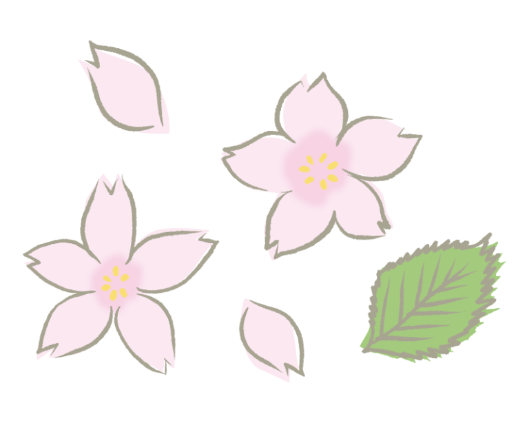

 お知らせ
-
お花見期間（３月３０日～４月９日）について
-
期間：３月３０日（木）～４月９日（日）
時間：午後８時まで
内容：宇都宮タワーの延長営業、ぼんぼり点灯と宇都宮タワーのライトアップ、屋台の営業。 園内は新型コロナ感染防止のためご協力をお願いします。
・密を避け、間隔をとっての歩行・観賞をしてください。
・会食は家族等４人以下の少人数でお願いします。
園内禁煙、火気禁止にご協力をお願いします。
ゴミはお持ち帰りください。
-
公園周辺の公道は駐車禁止です。
-
公園周辺の公道は駐車禁止となっております。
周辺住民の皆様に迷惑をおかけすることや、通過車両の通行の妨げとなりますので、 駐車場以外への駐車は絶対におやめください。
違法駐車は警察へ通報します。
-
園内の火気使用（花火、バーベキューなど）禁止です。
-
公園内は全面禁煙となっております。
火気使用（バーベキュー・花火・カセットコンロやバーナーの使用）も禁止されておりますので、ご協力願います。
宇都宮タワー(展望塔)
このタワーは、テレビ中継として建設され展望台としても開放さております。
関東平野の地平線が一望できるほか、那須・日光連山も一望できます。
通常営業時間
午前９時から午後４時３０分まで
使用料
個人：大人（高校生含む）１９０円、小中学生９０円
団体：大人（高校生含む）１００円、小中学生５０円
※幼児及び市内に住む小中高校生、市内の小中高等学校に通う人は無料
※障がい者とその介護者１名の料金は全額免除（障がい者手帳をお持ちください）
アドベンチャーU
普段はなかなか乗ることができないゴーカート。 豊かな自然に囲まれながら、のびのびとした時間を楽しむことができます！
普段はなかなか乗ることができないゴーカート。 豊かな自然に囲まれながら、のびのびとした時間を楽しむことができます！
アクセス
お問い合わせ
メッセージを送信しました。
お問い合わせいただき、誠にありがとうございます。
メッセージは、担当者が確認の上ご連絡差し上げます。
ご連絡まで今しばらくお待ちください。